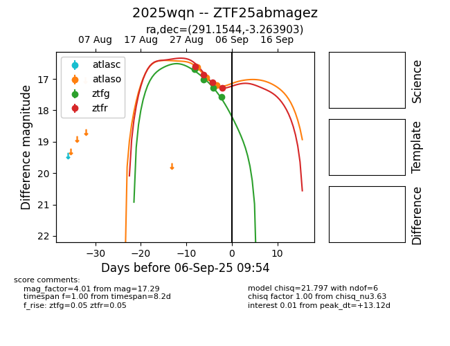

FINK: ZTF25abmagez
Lasair: ZTF25abmagez
ALeRCE: ZTF25abmagez
TNS: 2025wqn
YSE: 2025wqn
ZTF25abmagez (ztf,fink)
2025wqn (tns,yse)
equatorial (ra, dec) = (291.1544,-3.26390)
galactic (l, b) = (33.8021,-8.86753)

last atlaso=18.29, ztfg=18.79, ztfr=18.49
10 atlaso, 9 ztfg, 7 ztfr detections